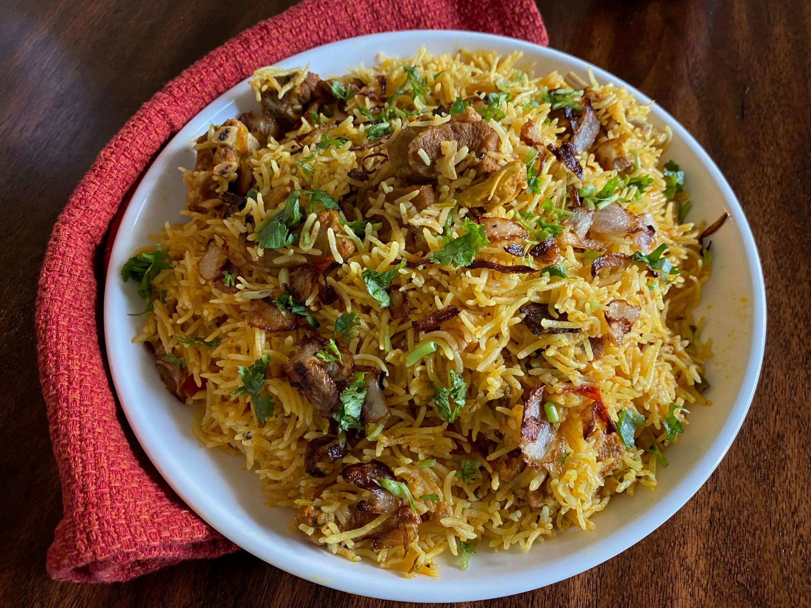

Author's intention
I made this to share a few of my favorite foods and simplified recipes so that you can also make it at home:)
Hot foods and platters
- Biryani
- Pilau
- Ugali & Nyama choma

Biryani is a mixed rice dish originating among the Muslims of South Asia. It is known for its aroma and flavor. Fresh herbs, saffron, and basmati rice give it a sweet-floral aroma that hits the nose before you taste it. Whole garam masala, fried onions, and marinated meat provide warmth and subtle heat to the dish.
| Nutrient | Value per 200g serving |
|---|---|
| Total Fat | 7g |
| Saturated Fat | 1g |
| Trans Fat | 0g |
| Cholestrol | 60mg |
| Sodium | 800mg |
| Total Carbs | 37g |
| Dietary Fiber | 2g |
| Total Sugars | 5g |
| Added Sugars | 1g |
| Protein | 18g |

Pilaf or pilau is a rice dish, or in some regions, a wheat dish, whose recipe usually involves cooking in stock or broth, adding spices, and other ingredients such as vegetables or meat, and employing some technique for achieving cooked grains that do not adhere to each other.
| Nutrient | Value per 200g serving |
|---|---|
| Total Fat | 1g |
| Saturated Fat | 0.4g |
| Sodium | 125mg |
| Total Carbs | 63g |
| Dietary Fiber | 4g |
| Total Sugars | 0g |
| Protein | 7g |

Ugali, a staple dish across East Africa, is a versatile and hearty cornmeal porridge that forms the perfect accompaniment to a variety of main dishes. Its subtle, comforting taste and satisfying texture provide the ideal canvas to savor the rich flavors of our cuisine. Pair it with our mouthwatering Nyama Choma, succulent grilled meat that's been marinated to perfection. Served sizzling hot, Nyama Choma captures the essence of traditional African barbecue, infusing each bite with smoky goodness and an irresistible aroma.
Yummy baking recipes
- Moist Banana Cupcakes
- Moist Chocolate Cake
- Click here for more delicious and easy baking recipes
My absolute favorite dessert. It's especially moist and sweet which makes them so irresistibly good. It's suprisingly very easy to make too.
Honesty, who doesn't love chocolate?? This yummy treat never fails to lift up anyone's mood. Although sometimes difficult to get right, once done it instanty becomes a household favorite.